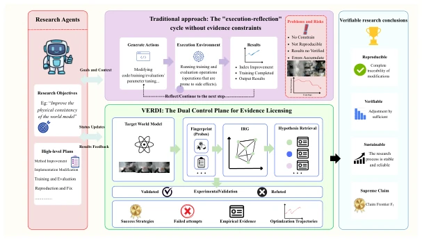
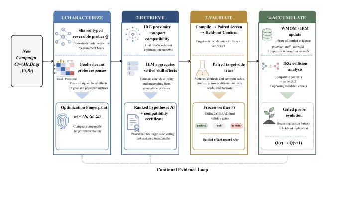
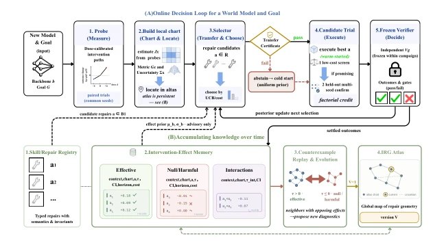
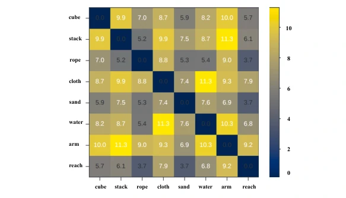
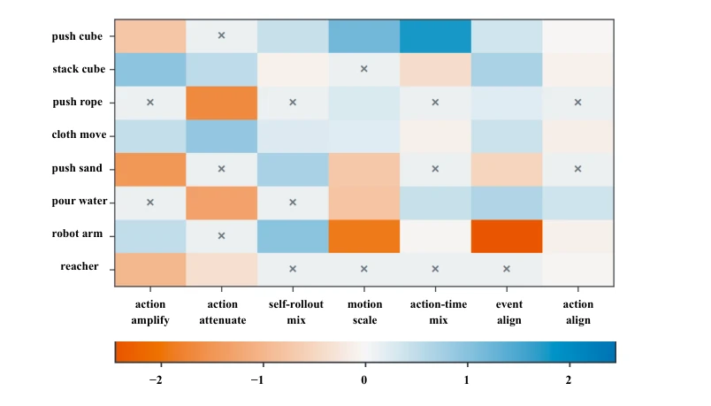
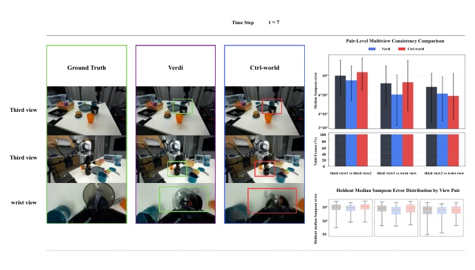
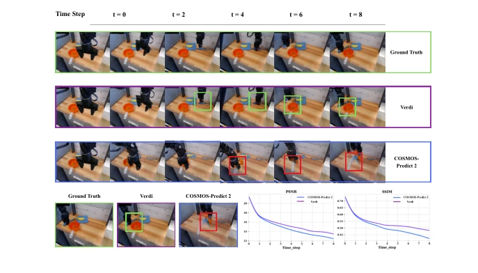
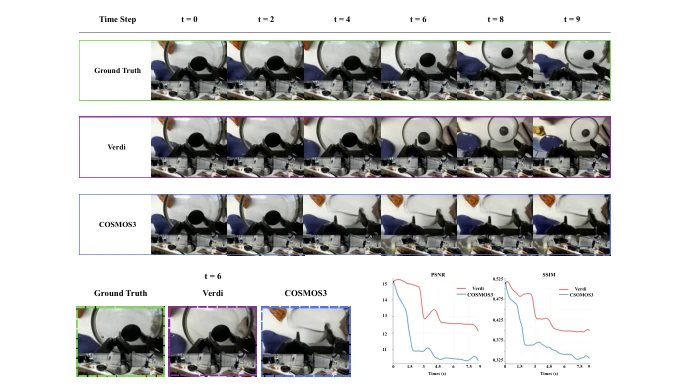
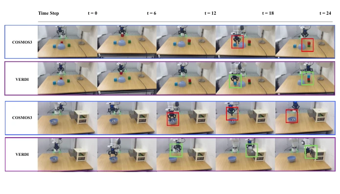

基础世界模型（World Models）在具身智能中越来越重要，但优化过程缺乏累积性。现有的研究 Agent 如 SWE-agent (Yang et al., 2024) 或 The AI Scientist (Lu et al., 2024) 虽然能自动化实验，但往往把成功的策略当作可直接复用的配方，缺乏跨模型迁移的安全保障。这导致每个新模型开发时都要从头探索优化策略，重复造轮子。更严重的是，架构相似不代表优化行为相似，直接复用经验容易引发负迁移（Negative Transfer）。VERDI 指出优化知识本质上是模型相关的，现有系统缺乏基于优化相关特征（而非实现细节）来关联异构世界模型的方法。因此，需要一种机制来区分'检索到的经验'和'可迁移的知识'，避免盲目尝试带来的资源浪费和性能下降。
—

Figure 1: Comparison between Verdi and other agents.
方法Method
VERDI 将世界模型优化建模为四阶段持续证据循环：表征（Characterize）、检索（Retrieve）、验证（Validate）、积累（Accumulate）。首先，通过共享的推理时探针（Inference-time probes）库对目标模型进行表征，生成优化指纹（Optimization Fingerprint），捕捉模型对语义扰动的响应，而非依赖架构标签。其次，利用干预修复几何（IRG）计算指纹间的距离，检索相关的优化技能作为假设，而非直接结论。关键创新在于验证阶段：所有候选策略必须通过冻结验证器（Frozen Verifier）下的目标侧配对实验，只有满足兼容性证书（Compatibility Certificate）且通过严格门控的实验结果才会被记录。最后，积累阶段将正例、零效、有害及交互结果写入世界模型优化记忆（WMOM）。若发现 IRG 碰撞（即相似指纹下技能效果矛盾），则触发探针进化，更新诊断基。整个流程强调'检索即假设，验证即许可'，确保知识复用的可靠性。
—

Figure 2: Continual evidence loop of Verdi. The framework (1) characterizes a new campaign with typed probes and an Optimization Fingerprint; (2) retrieves ranked hypotheses using IRG proximity and support compatibility; (3) validates each hypothesis through paired target-side screens and held-out confirmation under a frozen verifier; and (4) accumulates settled positive, null, harmful, and interaction outcomes in WMOM/IEM. Opposing validated effects trigger IRG collision analysis and gated probe evolution, closing the evidence loop.

Figure 3: Detailed online decision and memory-update loop. (A) Verdi characterizes a target model with shared inference-time probes, relates its Optimization Fingerprint to prior campaigns through the Interventional Repair Geometry (IRG), and retrieves Optimization Skills as hypotheses. Each hypothesis is compiled and tested on the target under a frozen verifier; retrieval never directly changes the model or writes a knowledge claim. (B) Confirmed positive, null, harmful, and interaction outcomes update the WMOM. Contradictory outcomes among nearby fingerprints expose missing diagnostic distinctions and drive held-out probe evolution across campaigns.

Figure 6: Pairwise IRG distances between environments (ACWM-Phys testbed). All axes and the color scale are described here rather than in the panel. Each cell is the IRG distance dIRG (Eq. 14) between two environments (same row/column order as Fig. 5); the diagonal is zero by construction, and cell brightness encodes distance (dark ≈0 to bright ≈11; the collision-screening neighbor threshold τq of Eq. 18 is 7.5). Distances are computed from the full repair fingerprint rx = vec(W 1/2 q Jx) over all goal, diagnostic, and validity outcomes (Eq. 12); Fig. 5 displays one outcome row of the underlying Jacobian. The structure recovers physically meaningful groupings— granular and topology-driven tasks (sand, rope, d = 5.3) lie well inside the neighbor range, whereas superficially similar rigid-bo
Figure 4: Visual comparison for the Ctrl-World repair. Three camera views on the open-lid task show improved consistency in two views, with the third-person view 2 and wrist view retaining the protected regressions recorded in Table 2.

Figure 5: Dose-response slopes across eight environments and seven probe directions (ACWM- Phys testbed). All axes and the color scale are described here rather than in the panel. Each cell is the paired finite-difference slope of the primary utility UG per unit dose—same seeds and trajectories, with and without a small dose—robustly standardized (§A.2); rows (top to bottom) are the eight environments (push cube, stack cube, push rope, cloth move, push sand, pour water, robot arm, reacher), columns (left to right) the probe directions (action amplify, action attenuate, self-rollout mix, motion scale, action-time mix, event align, action align). Blue marks a positive slope, orange a negative one; saturation encodes magnitude (|z| ≈2: strong response; |z| ≈0: the path does not move UG). Path
其他图片Other Figures

Figure 7: Consistency comparison across three camera views on the “put the lid on” task (DROID (Khazatsky et al., 2024)). Two views improve significantly over the Ctrl-World base- line; third-person view 2 and the wrist view degrade, consistent with the validity-gate analysis above.

Figure 8: Qualitative comparison of Cosmos-Predict 2 vs. REP on “place the fork in the pot” (BridgeData): ground truth, baseline, and REP-improved prediction.

Figure 9: Long-horizon generation on “loosen the pot handle” (DROID (Khazatsky et al., 2024)): COSMOS3 baseline vs. self-forcing. The baseline accumulates subject drift and background instabil- ity; self-forcing maintains visual stability and temporal consistency.

Figure 10: Real-robot head-to-head rollouts (Franka Panda, two tasks, sampled at t=0, 6, 12, 18, 24). Top pair: pick-and-place; bottom pair: object into drawer. In each pair, the vanilla Cosmos3 arm (blue border) drifts in late stages and fails (red boxes: grasp/object misplace- ment), while the repaired arm (purple border) maintains consistent progress and completes the task (green boxes). Identical initial states and instructions across arms.